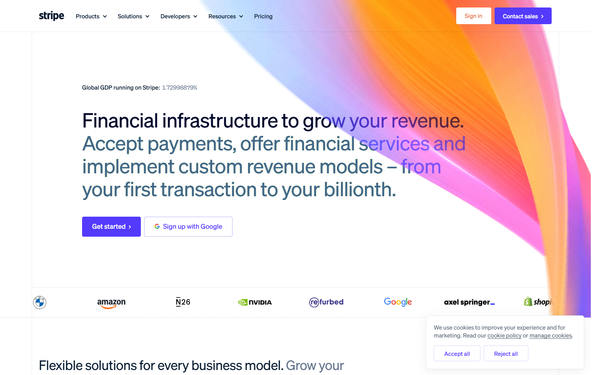
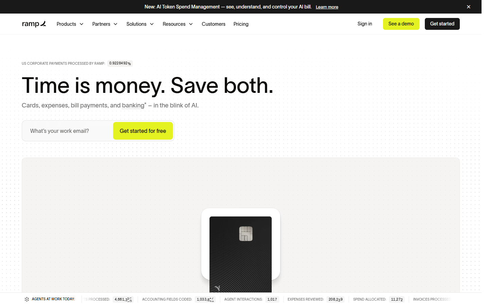
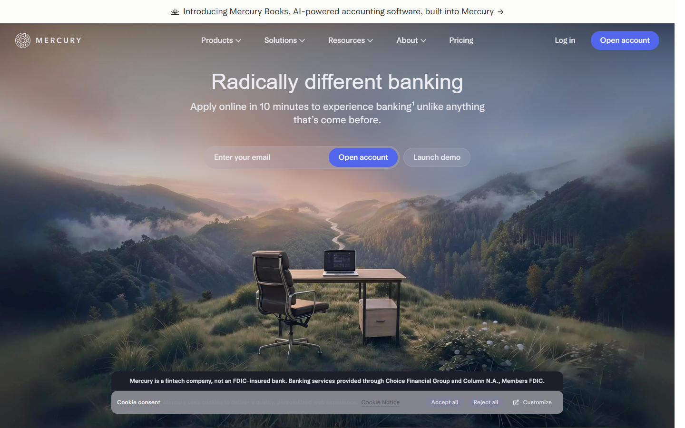

A bright, calm financial page. One sentence states the risk, one saturated ribbon carries the fault path, and everything else is white space. Confidence through restraint, as in Stripe, Ramp and Mercury.



A transit map, not a hairball. Straight lines, large stations, one line lit in colour when you pick a failure.
One ruler with one mark. The headline says the number in a sentence; the ruler shows how close it is.
A single large figure with a plain-language line under it and a proportion bar against the position size.
Two columns side by side, like a pricing comparison. The engine verdict sits above them as one word.